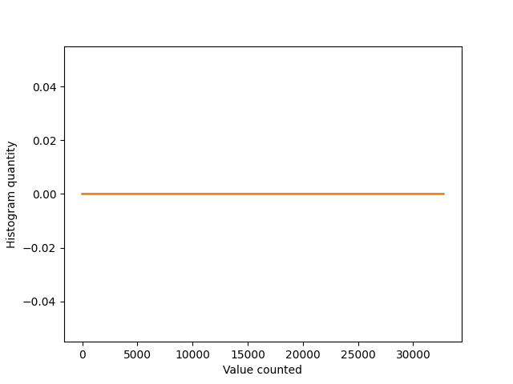

Note
Go to the end to download the full example code.
Loading multiple data files of the same format type
Processing data found across multiple files and performing analysis on them. This example will be filled in upon the creation of a new app note, but for now, it exists as a skeleton for theoretical demonstration purposes.
Skutils loaders can only open one file per “loader object”, meaning that you need to “instantiate” a new loader for every file you open, here’s an example
import skutils
import matplotlib.pyplot as plt
import numpy as np
# There will be a planned capture of real data for
DATA_FILES = []
Iterate over every file
# A list of dictionaries being built for per-channel histogramming
event_pulseheights = [{}, {}]
event_count = 0
# Iterate over the files
for file in DATA_FILES:
loader = skutils.EventCSVLoader(file)
# Iterate over each event in the loader
for event in loader:
event_count += 1
waveform = event.wavedata()
# Perform the per-channel histogram creation
for i, data in enumerate(event.channel_data):
if data.has_wave:
wave = data.wave
assert wave is not None
bucket = int(np.max(wave))
if bucket in event_pulseheights[i]:
event_pulseheights[i][bucket] += 1
else:
event_pulseheights[i][bucket] = 1
Build the histogram
histogram_list = []
for channel in event_pulseheights:
build_histo = [0 for _ in range(2**15)]
for key in channel:
build_histo[key] = channel[key]
histogram_list.append(build_histo)
Plot all histogram elements
for i, item in enumerate(histogram_list):
plt.plot(item, label=f"Channel data {i}")
plt.ylabel("Histogram quantity")
plt.xlabel("Value counted")
plt.show()

Total running time of the script: (0 minutes 0.222 seconds)